WTC 7 floor 13 girder at column 79: Phase 1 forensic report
1. Summary
The question for Phase 1 is whether heating of the floor 13 framing in the northeast corner of WTC 7, as NIST described it, makes the W33x130 girder spanning from column 79 to column 44 (erection mark A2001) lose its seat at column 79. NIST's report (NCSTAR 1-9) identifies that event as the start of the collapse. This report covers the evidence gathered so far, the models built and what their completed runs show.
- The fabrication drawings change the geometry at column 79. Frankel shop drawings 9114 and 1091 and erection drawing E12/13 (NIST FOIA releases) show the girder meeting column 79's north face only 4.17 deg off square (written on the sheets; the column's 12.3 deg rotation from the grid is inferred from three members), not at the 14.6 deg this study had digitized from NCSTAR 1-9 Fig. 8-16. They also show the girder skew is 16.5 deg, and that the girder end sits at the mouth of a recess formed by the column's 26 in. side cover plates, with about 4.15 in. of room to the west plate once inside it (Section 3).
- The study's first screening result is withdrawn. On the digitized geometry the screening model found walk-off decided by friction at the column 79 face, switching between 0.22 and 0.24. That threshold came from the wrong face angle (Section 5.1).
- On the drawn geometry the screening model shows no walk-off for any friction from 0 to 0.3, for the girder end 0.4 in. nearer or further, or with heating then cooling. The heated girder pushes its end about 1.5 in. into the recess; friction or the west side plate then stops it at 1.6 to 4.0 in. of westward movement, short of the 6.25 in. needed. Walk-off occurs only with zero friction and the side plates removed (Section 5.2).
- In the detailed shell model's baseline the girder does not leave its seat by the end of NIST's schedule (600 C beams, 500 C girder, held 1.4 s). Its end at column 79 moves at most 1.15 in. west and twists 3.3 deg. The connection sequence matches NIST's order through column 44 (first stud 100 C, all column 79 bolts 151 C, all column 44 bolts 544 C; NIST 103, 194 and 476 C), but no floor beam buckles, where NIST's beams all began to buckle at 600 C (Section 6).
- The main difference from NIST traced so far: the floor beams in this model carry little axial force. The girder is laterally flexible and its top flange slides under the slab without friction, so the expanding beams push the whole girder about 5 to 6 in. west along its middle instead of building up compression. NIST's beams buckled under compression (Section 7).
- Checks. The shell solver written for this study reproduces closed-form results (thermal expansion, restrained force, Euler buckling, friction thresholds, bolt failure) and matches CalculiX within 1.6 % for lateral-torsional buckling. The preregistered mesh criterion is narrowly missed on one measure, and kinetic energy exceeds 5 % of internal energy during NIST's 1 s gravity ramp and briefly after bolt failures (Section 8).
2. The question and NIST's account
NIST's leading hypothesis (NCSTAR 1-9, Chapters 8, 11 and 12; FAQ) is that fire on floors 8 to 13 heated the floor beams east of column 79, whose thermal expansion pushed girder A2001 laterally at column 79 after its erection bolts had sheared, until it lost its seat on floor 13. The floors below then failed in a cascade to floor 5, leaving column 79 unsupported over nine storeys; it buckled, followed by the east penthouse, columns 80 and 81 and the rest of the core.
NIST tested the floor framing mechanism in a partial-floor LS-DYNA model (§8.8): shells about 1.8 in., one layer of slab shells, bolts and studs as springs, gravity ramped over 1 s, then the beams heated uniformly to 600 C and the girder to 500 C between 1.1 and 2.6 s. Its reported sequence (Table 8-2):
| Time (s) | Beam (C) | Girder (C) | Event (NCSTAR 1-9 Table 8-2) |
|---|---|---|---|
| 1.44 | 103 | 89 | First shear stud failure |
| 1.54 | 154 | 131 | Both seat bolts of girder to column 79 failed |
| 1.62 | 194 | 164 | Both top clip bolts of girder to column 79 failed |
| 1.83 | 300 | 252 | All but three shear studs failed |
| 2.04 | 406 | 339 | Both seat bolts of girder to column 44 failed |
| 2.10 | 436 | 364 | Northmost floor beam began to buckle laterally |
| 2.18 | 476 | 398 | Both top plate bolts of girder to column 44 failed |
| 2.90 | 600 | 500 | All floor beams began to buckle; the girder rocked off its seat at column 79 |
The June 2012 errata set the column 79 seat width at 12 in. (from 11) and the lateral walk-off distance at 6.25 in. (from 5.5). The 16-story ANSYS model (§11.3) found walk-off at column 79 on floor 13 between 3.7 and 4.0 h with floor 13 steel at 300 to 700 C. NIST did not release its model input files; this study rebuilds the models from the published reports and drawings.
3. Evidence base
3.1 Documents and checksums
Every downloaded document is archived in the repository (sources/README.md), so the work can be checked if the originals are taken down. sources/SHA256SUMS covers all of them; scripts/fetch_sources.sh and scripts/fetch_drawings.sh restore any missing file from its original URL. Downloaded files are treated as untrusted data and never executed.
| File | SHA-256 |
|---|---|
nist/ncstar1-3d.pdf | f8dcf5134c03c59e787b972a1d4b67c25c3565867ed52b56c9e13f044b20c6ed |
nist/ncstar1-9a.pdf | cde75ab6c5cadd972ef6fc9e1716bf6c9a50518bb31ad02f1b1b5d2b028bd5f4 |
nist/ncstar1-9.pdf | 30addb2699370f89e40bccfdcf4b4a18a7f4fb3bc1c0101bd3fcdec9b892b18f |
nist/ncstar1a.pdf | 03c801bc1338533b54c6a64a66f074165c9429a59df11e2f58a19f5da91aef09 |
errata/ncstar1-9_errata.pdf | d5b006c0580acc73683660ec39eecbc2b4eefeba13d7ecbbf5ffa3787561d9c7 |
aisc/W_shapes.csv | 387b2b4b367de8734747dd57684584ff7d109bf69e7ad0aff9acc696dad722d7 |
faq/wtc7_faq.html | ca93c0de20404847d4d6ada6eeebdd14298f2ae3af78b920cb7b8d6b526d024a |
faq/wtc7diagramforfaqs_1.gif | 3e4081ef1606dafa9f5786479bffce76d595f51c7642969eadbdc27fb868c8fd |
| Local file | Sheet | Source | Retrieved (UTC) | SHA-256 |
|---|---|---|---|---|
FOIA12-009_1091.TIF | Frankel 1091, Col. 79, 7th, 8th and 9th tier, rev 2 | archive.org | 2026-10-23T05:55:07Z | 21ec08cebece53dce71374eb277949830ebead253472e5c861dc25e991f73fe6 |
FOIA12-009_9114.TIF | Frankel 9114, beam to column connections, core, rev 2 | archive.org | 2026-10-23T05:55:09Z | 194355bd4317cd3c2d9b78e0f5401390c70b790a74647fa947512003f4e57abd |
FOIA12-009_E12_13.tif | Frankel E12/13, 12th and 13th floor framing plan, rev 4 (stored rotated 90 degrees) | archive.org | 2026-10-23T05:55:10Z | f12919bd465008cf67f3000dfddee9065077c8bab84364c11c5e1a47a3ada361 |
FOIA09-49_E12_13.tif | Frankel E12/13 (same scan, north up; used for readings) | archive.org | 2026-10-23T05:55:11Z | 553d9223ab77a422b1aea00489c2ce26aa9acf58fc78bd15da526fdccc61c4bc |
FOIA11-209_S-8.tif | Cantor S-8, typical floor framing plan, 8th to 20th and 24th to 45th, rev H | archive.org | 2026-10-23T05:55:12Z | 980ba280fedd1fe2bdc851c58495617c06e2fb74b8f4e3fe52eb82f91ddb82df |
FOIA09-49_S8.tif | Cantor S-8 (second scan of the same sheet) | archive.org | 2026-10-23T06:26:46Z | c72b3fa10c3d8f73ad7aa34444ff84b6e6bc8a3b526732a1e8ddc1c35da4391d |
FOIA11-209_S-8-10.tif | Cantor S-8-10 (10th floor) | archive.org | 2026-10-23T05:55:13Z | 69fdb4ee9464b7a384f28936d8a318898707639b9b1bda7354a95e7df6414b43 |
FOIA09-49_1370.tif | Frankel 1370, columns 6th and 7th tier (zone 2), column 44, rev 1 | archive.org | 2026-10-23T05:55:17Z | 602a4b8dc8406bd96a2d2d815a94fbf4d5d5a51a07899828af62dc717c8cdd72 |
FOIA12-009_9102.TIF | Frankel 9102, beam to column connections, north and south walls (column 44 seat), rev 4 | archive.org | 2026-10-23T06:10:55Z | d56694c2c56d0e7649720b307d6538f88412e88eb9ce09824253a6275a279e6a |
FOIA12-009_9100.TIF | Frankel 9100, connection plan for 8th to 21st floor (key plan), rev 3 | archive.org | 2026-10-23T06:10:36Z | a7d2d4deb1b280ece8910ac29bd060025a755f65f53424f30801ada1e06eaed7 |
FOIA09-49_3004.tif | Steel Structures Corp. 3004, W24x55 beams (A3004, B3004, C3004, K3004 and others) | archive.org | 2026-10-23T05:55:15Z | 41740f98903e4075efe74b5901780ecd8da9129ed339aee51c7b8c978f6d0fc7 |
FOIA09-49_3005.tif | Steel Structures Corp. 3005, beams including G3005 (W21x44) | archive.org | 2026-10-23T05:55:16Z | 5965e63050474cb58b40db22426b674885576c274c320b03c35ba0f2e64eb4b5 |
FOIA09-49_3016.tif | Steel Structures Corp. 3016, beams including P3016 (W12x26) | archive.org | 2026-10-23T05:55:17Z | f63cfa4f6a585c501af88d36944b7bedd09af098144e344dc7e3436dc945d82c |
FOIA09-49_E120.tif | Frankel E120, east and west wind bracing elevations with structural steel notes | archive.org | 2026-10-23T05:55:19Z | 5f824bba3574195afeb2f0555b6bcb9a8611dbd018e0639a0cb463afc628df24 |
FOIA12-009_2000.TIF | Frankel 2000 (checked because the girder piece drawing would be 2001; it is a column 57 sheet) | archive.org | 2026-10-23T06:10:37Z | 30d3b204b14d82e16b6360721246fc0dcb9708ad0f6de0bc1c7e9c3e7026dc18 |
FOIA12-009_WTCI-000271-I.PDF | NIST-numbered greyscale scan (2 pages, 200 dpi JPEG, PDF created 2010-04-15); both pages are E10/11 (10th and 11th floor framing plan). Checked to see whether the WTCI PDFs held a better E12/13; not used for readings | archive.org | 2026-10-23T06:55:54Z | 1fefb7c99f38b20ae3eec368486340dc4598488cd64fd77d719188d80d7a4c9a |
FOIA12-009_WTCI-000271-I_preview.gif | archive.org thumbnail of the above (100 x 152 px; too small to use) | archive.org | 2026-10-23T06:55:44Z | 59cddbfa909fc8a893b7ad63d99980d5281947756d6907a139efbdc092518609 |

Not obtained: the girder's own piece drawing (Frankel 2001; the 2000 series is not in the FOIA 12-009 release), so the girder's length, its column 44 end and its hole layout come from other sheets or are assumed (A91, A96). NIST's model input files were not released.
3.2 What the drawings show
Readings by sheet, with each item marked legible when read directly, partly legible
when a character or reference line is uncertain, and inferred when derived from written dimensions or scaling.
Full readings: sources/drawings/READING.md.
| Item | Reading | Sheet | Confidence | Used as |
|---|---|---|---|---|
| Girder skew to grid | 3 9/16 in 12 = 16.5 deg; span 45'-7 5/8 between column centres | E12/13 rev 4 | legible | A90, A91 |
| Girder to column 79 axis | 7/8 in 12 = 4.17 deg | 9114 rev 2, 1091 rev 2 | legible | A93 |
| Column 79 rotation | about 12.3 deg clockwise from grid (A2002 square to it, W36x135 at 5 5/16 in 12) | E12/13, 1091 | inferred | A93 |
| Column 79 section | W14x730 (22 3/8 x 17 7/8) with 2 PL 26 x 2 across the flange tips | 1091 BOM | legible | A94 |
| Side-plate projection | 1 13/16 in. past the flange face if centred (not dimensioned) | 1091 | inferred | A94 |
| Seat pf | PL 8 1/4 x 1 x 1'-0, aligned with the girder, back to the flange face | 1091, 9114 | legible | A95 |
| Seat support pg | PL 14 x 2 x 1'-6 7/8 across the plate ends, below the seat | 1091, 9114 | legible | not modelled (below seat) |
| Seat bolts | 2 x 7/8 A325, gage 5 1/2, bolt line 1'-5 1/4 from column centre | 9114, 1091 | legible | A95 |
| Girder end position | 4 1/4 from seat bolt line: 13.0 in. from column centre, 1.78 in. from flange face | 9114 | partly legible | A91 |
| Clip angle | L6x4x3/8 x 9 in., standard 15/16 holes (no slot called out) | 9114, 1091 | legible | A95, S3 baseline |
| Girder end stiffeners | PL 5 1/2 x 3/4 x 1'-6 both sides of web | 9114 | legible | A97 (sensitivity) |
| Column 44 | W14x665 on grid; girder enters between flanges at 16.5 deg; top plate 1 1/8 x 15/16 slots | 1370, 9102 | legible | A96 |
| Beams into A2001 | G3005 W21x44 <24>, A3004, B3004, C3004, K3004 W24x55 <28>; stations 50.1 to 512.8 in. from col 44 | E12/13 | legible | A92 |
| Girder studs, floor 13 | none shown | E12/13, S-8 rev H | legible | S1 baseline 0 |
| Camber | girder 1 in., beams 1 3/4 to 2 1/4 in. | E12/13 | legible | not modelled (Q22) |

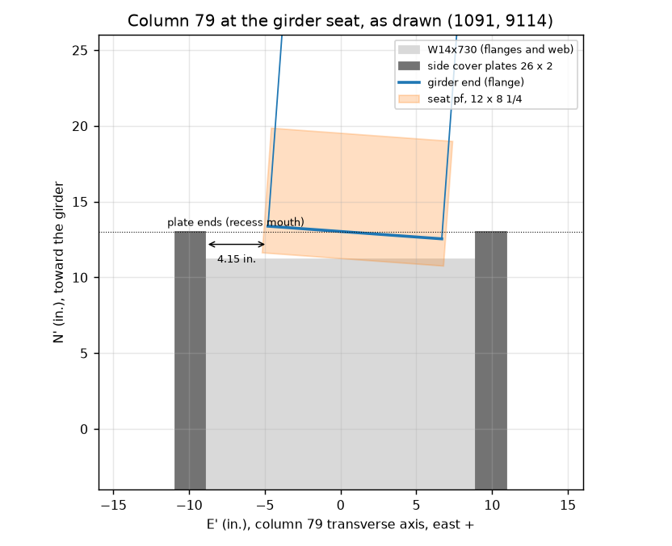

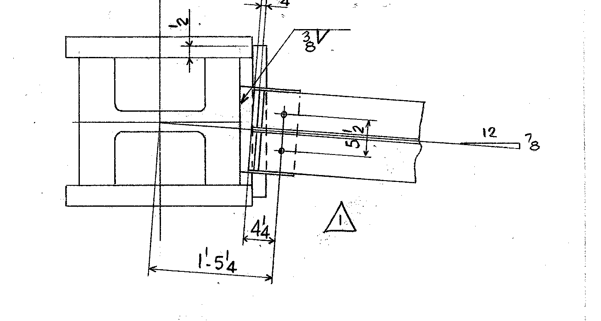

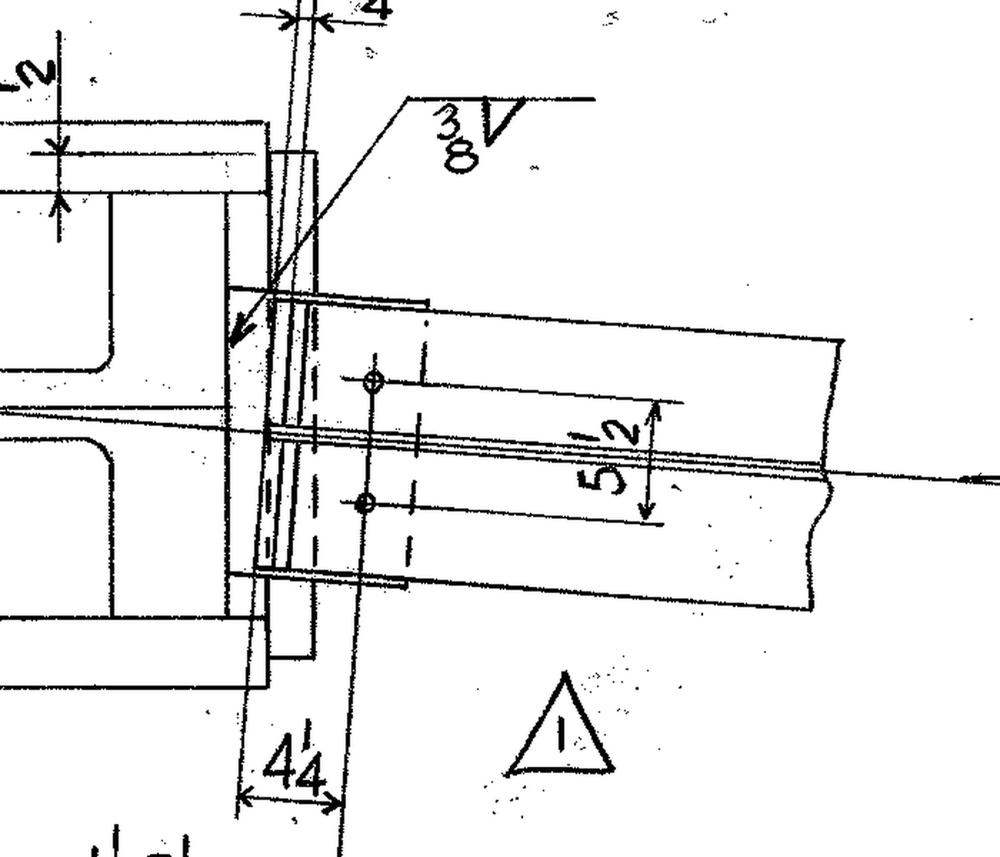

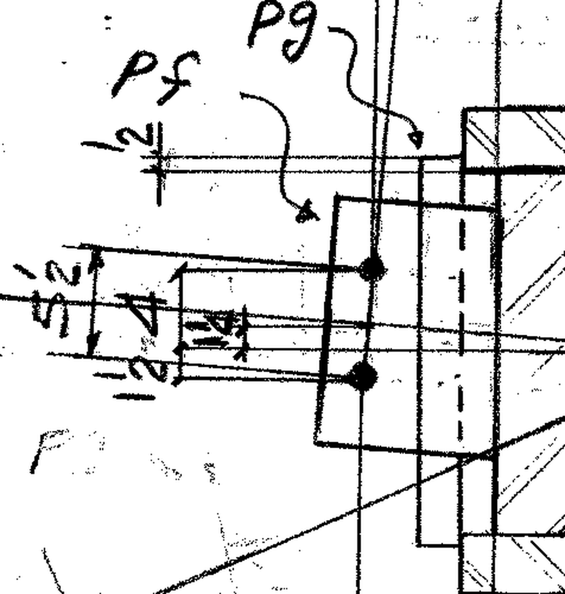

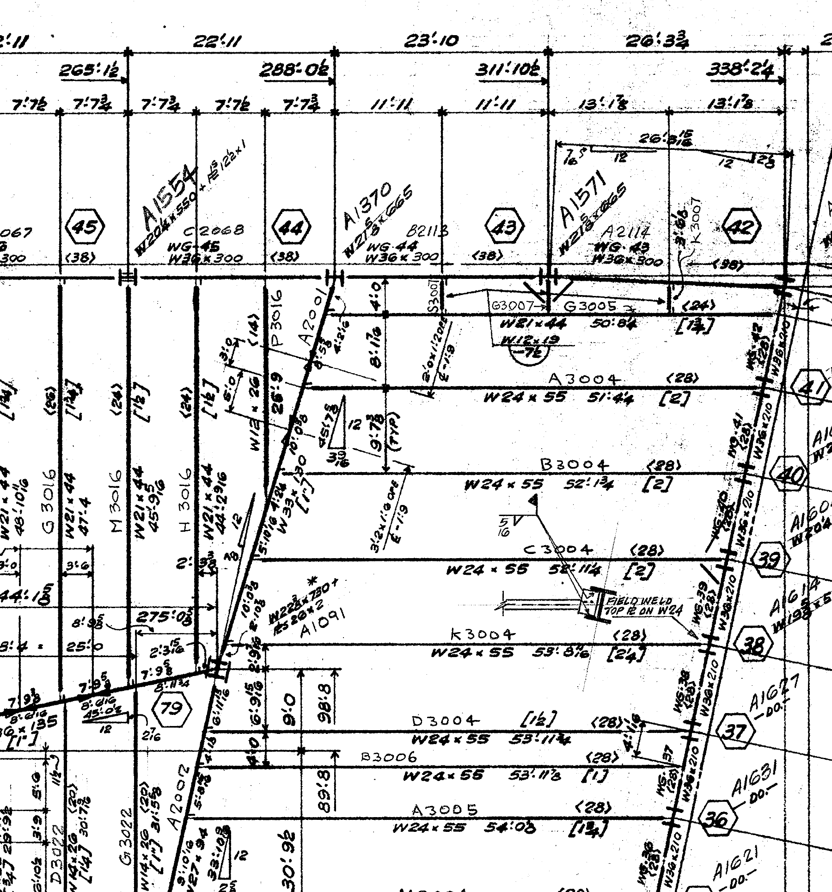

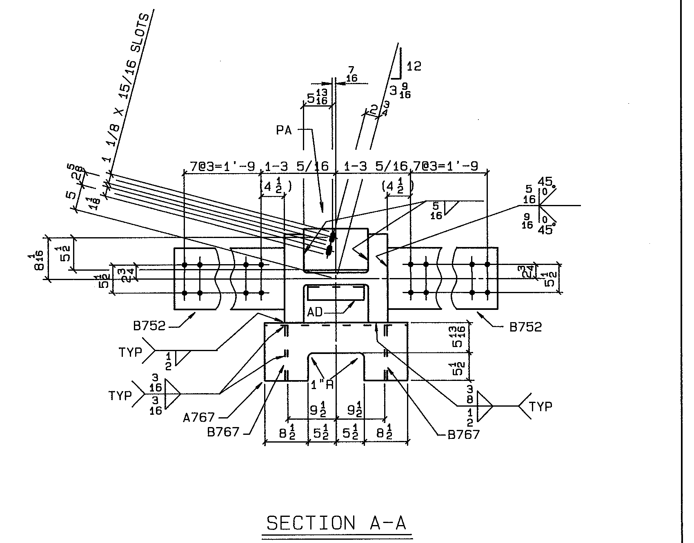
3.3 Secondary sources
The 2020 University of Alaska Fairbanks report (Hulsey, Quan, Xiao), AE911Truth's 2020 request for correction and NIST's
2020 reply discuss the side plates. The first two argue that the heated girder becomes trapped behind the west side plate;
NIST's reply describes the seat as attached to the exterior edges of the side plates with the girder at a slight angle.
On the girder's room-temperature position these sources agree with the reading above within its uncertainty. None of them
was used as an input; they are summarized in sources/drawings/READING.md.
4. Methods
4.1 Pre-registration
Outcome classes, event definitions, model checks and every sweep range were written and hashed before the first run,
and each later amendment was hashed before the runs it governs (docs/preregistration.md). The rule throughout: no
input is chosen or changed after seeing the result it affects; corrections from primary documents are logged with their reason.
| Recorded (UTC) | File state | SHA-256 |
|---|---|---|
| 2026-10-22T06:56Z | docs/preregistration.md | 8732aee0e240e548d8a61a95614644d6ee7b7438caebd623eee1a07a8afb9335 |
| 2026-10-22T07:02Z | docs/preregistration.md (amended: S15 added) | 26c283764387fda59ca62aeb93b427a2eed4312c58cccb2c041186d010e9f2b8 |
| 2026-10-22T07:20Z | docs/preregistration.md (change log: A48 geometry correction; no criterion changed) | dc163303c816f19b3ac03a101259df556cf66b4eef56d69aa4fda7194e087486 |
| 2026-10-22T09:25Z | docs/preregistration.md (change log: follow-up runs recorded; no criterion changed) | a5af34e3868ffa4f3ee0f95eabe9f5024f1ff30c360d38fc3da46c6f93d7f2bd |
| 2026-10-23T09:29Z | docs/preregistration.md (Section 9 added: detailed model; before any thermal run of it) | e82ed1730ab327835debb6ad36bbd919f8d049bf07369b66b9bf4ed3f0a74a88 |
Events. E1: all four erection bolts at the column 79 seat failed. E2: walk-off at column 79, the girder end moving 6.25 in. laterally or 5.5 in. along its axis after E1 (errata values). E2r: twist at column 79 of atan(bf/d) = 19.2 deg. E2s: physical loss of support, the girder end dropping 2 in. E3: all column 44 bolts failed. E4: a floor beam deflecting laterally by L/50. E5: the girder bowing by L/50. Classes: CONFIRMS if E1 ≤ 400 C and E2 (or E2r, E2s) ≤ 700 C in the baseline; CONTRADICTS if no run within the ranges reaches E2 by 700 C; CONDITIONAL otherwise.
4.2 Models
| Item | NIST partial-floor model (§8.8) | This study, detailed shell model |
|---|---|---|
| Software | LS-DYNA (explicit) | wtc7.xfe, written for this study (explicit; OpenRadioss was withdrawn by its owner in October 2026) |
| Geometry | From the Frankel and Cantor drawings (cited in NCSTAR) | From the same drawings (A90 to A99); girder piece drawing missing |
| Members | Fully integrated shells, 5 points through thickness, about 1.8 in. | Belytschko-Lin-Tsay shells, 5 points, 1.8 in.; 51,149 shells |
| Slab | One shell layer, MAT_124 tension/compression, 7.5 in. | One shell layer, tension/compression plasticity with NIST's rule-of-mixtures curves, 7.5 in. |
| Connections | Bolts and studs as nonlinear springs (shear and axial) | Breakable springs with NIST's temperature-dependent strength; hole clearance; slots |
| Seats, columns | Shells, welded edges fixed; column 79 flange and side-plate projections modelled | Rigid planes with friction, including the side plates' inner faces and ends; seat edges act on the flange |
| Friction | Not described | 0.3 baseline (AISC Class A slip coefficient as a proxy), swept 0 to 0.6 |
| Loading | Gravity 1 s; heating 1.1 to 2.6 s to 600/500 C; analysis to about 4 s | Same schedule |
| Girder end stiffeners | Not modelled (NIST, 2013 and 2020) | Not in baseline; one run as drawn |
The plan-view screening model (phase1/plan_model.py) uses beam elements in the horizontal plane with the same
connections, friction and contacts, including a recess stop for the side plates. It runs in minutes and is used to locate
which inputs matter; it cannot represent twisting, sagging or rocking.

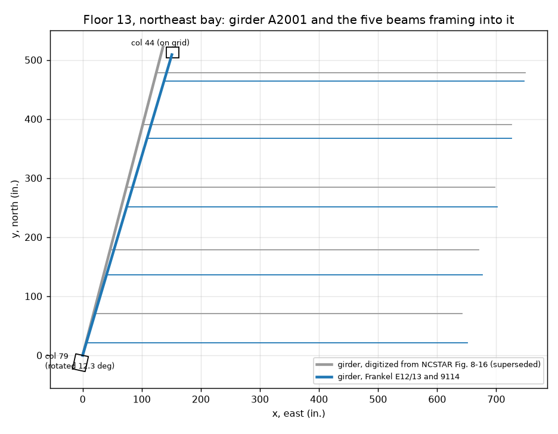
4.3 Solver verification
The shell solver passes 22 unit tests against closed-form results (tests/test_xfe.py): material curves
within 1 % of the NIST and EN 1993-1-2 tables, free thermal expansion within 0.4 % (preregistered limit 1 %), restrained thermal
force exact while elastic, a heated pinned strut's buckling load within 2 % of Euler, a block on an incline sticking or sliding
exactly at tan(theta) = mu, a plate pushed into a skewed face sliding only when friction is below tan(14.6 deg), bolt springs
breaking at the temperature-reduced capacity, and contact carrying an applied load exactly. Lateral-torsional buckling of a shell
I-beam was checked against the Vlasov formula and against CalculiX 2.20 (independent code, linear buckling):
| Mesh | Hourglass coefficient | This solver (kip-in.) | CalculiX S4 (kip-in.) | Ratio to CalculiX | Ratio to theory | Hourglass / internal energy |
|---|---|---|---|---|---|---|
| 80 x 4 | 0.05 | 177.4 | 182.7 | 0.971 | 0.960 | 0.043 |
| 80 x 4 | 0.1 | 179.7 | 182.7 | 0.984 | 0.972 | 0.064 |
| 160 x 8 | 0.1 | 180.2 | 181.7 | 0.992 | 0.975 | 0.026 |
Gravity check. Under gravity alone the support reactions sum to 216.0 kip against 215.6 kip applied. Two modelling choices were corrected during gravity-only pilots, before any heated run: an elastic slab and rigid top-plate ties clamped the beam ends against their seats, so the slab now follows NIST's tension/compression model (A72) and the clip-angle and top-plate ties have the bending stiffness of those parts (A80). A residual prying pattern remains: each beam end rotates on the toe of its seat and the seat carries about twice the simple end shear, limited by the cracked slab's local strength.
5. Screening model results
5.1 Digitized geometry (superseded)
67 runs on the geometry digitized from NCSTAR figures, with the column 79 face on the building grid. Walk-off
occurred in 30 runs, all at friction 0.22 or below or in combinations including it. These runs are kept for the record
(results/phase1/summary.md) but the face angle that produced the friction threshold is contradicted by the drawings
(4.17 deg, not 14.6 deg), so they carry no weight in the conclusions.
5.2 Drawings geometry
| Run | Friction | Side plates | Other | E1 (C) | E3 (C) | Walk-off | Max west (in.) | Max toward col 79 (in.) |
|---|---|---|---|---|---|---|---|---|
D_heatcool_mu0 | 0.00 | as drawn | heat then cool | 122 | 335 | none | 4.04 | 1.67 |
D_mu0 | 0.00 | as drawn | – | 122 | 335 | none | 4.04 | 1.67 |
D_mu0.05 | 0.05 | as drawn | – | 122 | 332 | none | 4.04 | 1.67 |
D_mu0.1 | 0.10 | as drawn | – | 122 | 336 | none | 4.04 | 1.67 |
D_mu0.2 | 0.20 | as drawn | – | 122 | 336 | none | 3.37 | 1.63 |
D_baseline | 0.30 | as drawn | – | 122 | 336 | none | 2.21 | 1.54 |
D_end+0.4 | 0.30 | as drawn | col 79 +0.4 in. | 122 | 416 | none | 2.82 | 1.99 |
D_end-0.4 | 0.30 | as drawn | col 79 -0.4 in. | 122 | 260 | none | 1.62 | 1.10 |
D_heatcool | 0.30 | as drawn | heat then cool | 122 | 336 | none | 2.21 | 1.54 |
D_mu0_clear | 0.00 | removed | – | 122 | 335 | 625 C | 10.55 | 2.14 |
D_mu0.2_clear | 0.20 | removed | – | 122 | 336 | none | 3.37 | 1.63 |
D_clear | 0.30 | removed | – | 122 | 336 | none | 2.21 | 1.54 |

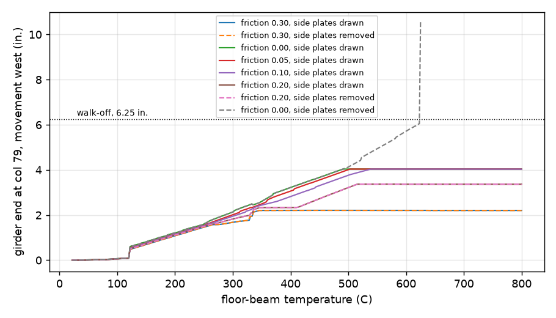
6. Detailed shell model results
| Run | Mesh (in.) | First stud | E1 | E3 | E4 | E5 | Seat lost (E2, E2r, E2s) | Max west (in.) | Max toward col 79 (in.) | Max twist (deg) | Wall (h) |
|---|---|---|---|---|---|---|---|---|---|---|---|
baseline | 1.8 | 100 | 151 | 544 | – | – | none | 1.15 | 1.88 | 3.3 | 14.7 |
check_mesh_coarse | 3.6 | 99 | 150 | 564 | – | – | none | 1.19 | 1.88 | 2.5 | 1.5 |
| NIST Table 8-2 | 1.8 | 103 | 194 | 476 | 436 | – | rocking, after 600 C | – | – | – | – |
Temperatures are floor-beam temperatures in C; the girder is at 20 + 0.828 (beam - 20).

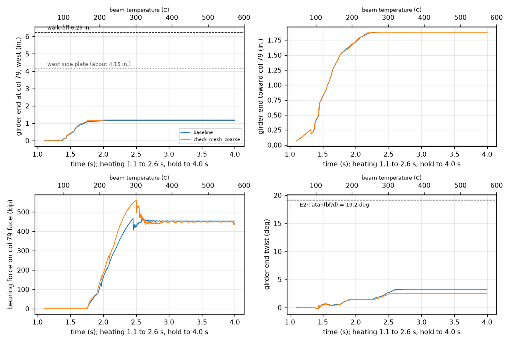

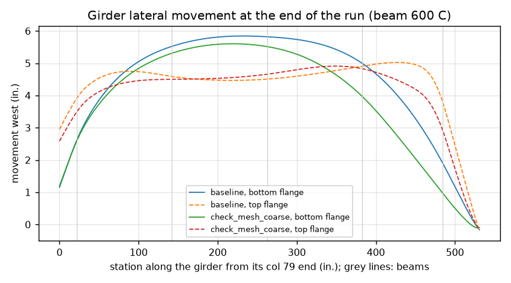

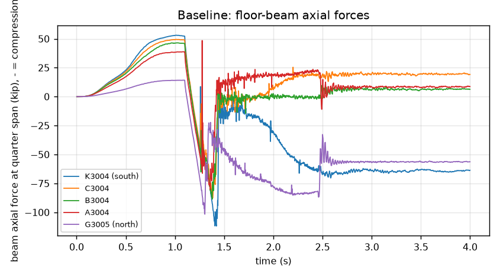
Run list and status (preregistration Section 9.5)
| Priority | Run | Settings | Status |
|---|---|---|---|
| 1 | baseline | baseline values | done |
| 1 | mu0 | mu_seat=0.0 | running |
| 1 | mu0.1 | mu_seat=0.1 | queued |
| 1 | mu0.2 | mu_seat=0.2 | running |
| 1 | mu0.22 | mu_seat=0.22 | queued |
| 1 | mu0.24 | mu_seat=0.24 | queued |
| 1 | mu0.26 | mu_seat=0.26 | queued |
| 1 | mu0.28 | mu_seat=0.28 | queued |
| 1 | Q12_clear | side_plates=clear | queued |
| 1 | Q12_clear_mu0 | side_plates=clear, mu_seat=0.0 | queued |
| 1 | S11_end-0.4 | end79=-0.4 | queued |
| 1 | S11_end+0.4 | end79=0.4 | queued |
| 1 | S7_peak700 | peak=700.0 | queued |
| 1 | S8_heat_cool | history=heat-cool, peak=600.0 | queued |
| 1 | check_mesh_coarse | mesh=3.6 | done |
| 1 | check_rate_half | rate=0.5 | queued |
| 1 | A97_stiffeners | stiffeners=drawn | queued |
| 2 | S4_mu0.45 | mu_seat=0.45 | queued |
| 2 | S4_mu0.6 | mu_seat=0.6 | queued |
| 2 | S1_studs22 | girder_studs=22 | queued |
| 2 | S1_studs30 | girder_studs=30 | queued |
| 2 | S3_slot0 | slot=0.0 | queued |
| 2 | S3_slot125 | slot=0.125 | queued |
| 2 | S3_slot656 | slot=0.656 | queued |
| 2 | S5_col79_flexible | col79=flexible | queued |
| 2 | S6_slab_released | slab=released | queued |
| 2 | S7_peak400 | peak=400.0 | queued |
| 2 | S7_peak500 | peak=500.0 | queued |
| 2 | S9_EC3 | steel=EC3 | queued |
| 2 | S10_fy0.9 | fy_scale=0.9 | queued |
| 2 | S10_fy1.1 | fy_scale=1.1 | queued |
| 2 | S12_gap44_0.5 | gap44_lat=0.5 | queued |
| 2 | S12_gap44_1.0 | gap44_lat=1.0 | queued |
| 2 | S12_gap44_3.0 | gap44_lat=3.0 | queued |
| 2 | S13_bolt0.15 | bolt_slip_fail=0.15 | queued |
| 2 | S13_bolt0.35 | bolt_slip_fail=0.35 | queued |
| 2 | S14_stud0.10 | stud_slip_fail=0.1 | queued |
| 2 | S14_stud0.30 | stud_slip_fail=0.3 | queued |
| 2 | S15_muslab0 | mu_slab=0.0 | queued |
| 2 | S15_muslab0.6 | mu_slab=0.6 | queued |
| 2 | favourable | girder_studs=0, slot=0.656, mu_seat=0.2, col79=flexible, slab=fixed, steel=EC3, fy_scale=1.1, end79=0.4, gap44_lat=3.0, bolt_slip_fail=0.15, stud_slip_fail=0.1, mu_slab=0.6, peak=700.0 | queued |
7. Differences from NIST and their traced causes
| Observation | NIST | This study | Traced to | Status |
|---|---|---|---|---|
| Column 79 bolts fail earlier | E1 at 194 C | E1 at 151 C | Bolt spring stiffness and hole clearance not given by NIST (A24, A31; S13 sweeps them) | open |
| Column 44 bolts fail later | E3 at 476 C | E3 at 544 C | Geometry at column 44 (girder end, pocket clearances; girder piece drawing missing) and S12 | open |
| No floor-beam buckling | Northmost at 436 C, all at 600 C | None by 600 C; beam axial force below 100 kip | Girder top flange frictionless under the slab (A44, from NIST §11.2.3) and girder weak-axis flexibility: the beams push the girder aside instead of building compression | being tested |
| Girder not lost at column 79 | Rocked off its seat after beams buckled | Held at about 1.2 in. west, twisted about 3 deg | Follows from the row above; side plates also limit westward travel inside the recess (screening model) | being tested |
| Face angle at column 79 | Not stated in NCSTAR 1-9 | 4.17 deg from the drawings | Drawings 9114, 1091 | settled |
A difference is reported as traced only when a run that changes the identified input moves the result toward NIST's. The runs that test these explanations are in the priority-1 and priority-2 lists (friction, side plates, end position, peak temperature, bolt and stud properties). Girder-to-slab friction is not one of the preregistered sweeps; if the remaining runs leave the beam-buckling difference unexplained, it is the next candidate and will be added as a logged amendment.
8. Model checks and exceptions
| Check (preregistration Sections 4 and 9.4) | Criterion | Result | Status |
|---|---|---|---|
| Mesh: E1 between 3.6 and 1.8 in. | change < 10 C | 1.2 C | pass |
| Mesh: column 79 lateral movement (no E2) | change < 2 % | 1.154 vs 1.191 in. (3.2 %) | not met |
| Quasi-static, gravity ramp (0 to 1.1 s) | KE < 5 % of IE throughout | max 47 %, 49 % of samples above | exception |
| Quasi-static, heating and hold | KE < 5 % of IE throughout | max 7.3 %, 5.4 % of samples above | exception |
| Free thermal expansion | within 1 % | 0.4 % | pass |
| Restrained force | within 1 % | exact while elastic | pass |
| Euler buckling | within 2 % | within 2 % (imperfection-corrected) | pass |
| Rate check (half heating rate) | events within 10 C | pending | pending |
The mesh criterion on lateral movement is missed by about 1 percentage point (an absolute difference of 0.04 in.); under Section 9.4 the baseline must be rerun at 0.9 in. before the mesh question is closed. The kinetic-energy exceptions arise from NIST's 1 s gravity ramp, which excites the floor's first vertical mode, and from short transients when bolts snap; the half-rate rerun is the check that event temperatures do not depend on the loading rate. These are recorded as exceptions, not waived.

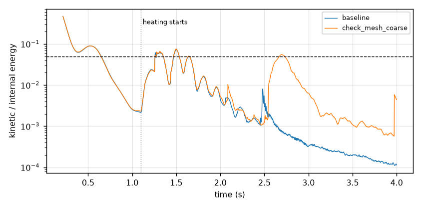
9. Limitations
- Phase 1 uses NIST's uniform temperature ramp, not its computed fire temperatures; that is Phase 2.
- The girder's piece drawing is missing; its column 44 end clearance and cut-back are assumed (A96).
- As-built fit-up is unknown; the drawn girder end has about 0.4 in. of margin to the side-plate recess (S11 sweeps ±0.4 in.).
- Seats, top plates and column faces are rigid planes and springs, not meshed plates; column 79 is fixed except in S5.
- Camber, the W12x26 framing in from the west and the slab's thermal response are not modelled.
- Friction values are proxies (AISC slip coefficient) with no WTC 7 measurement; they are swept, not known.
- The shell solver is new; it is verified against closed-form results and CalculiX for the checks listed, not for every mechanism.
- Computing time: a full-mesh run took 14.7 h on the original laptop; the remaining runs are moving to a faster machine (docs/running_elsewhere.md).
10. Next steps
- Finish the priority-1 runs: friction 0 to 0.28, side plates removed, girder end ±0.4 in., 700 C peak, heating then cooling, half rate, end stiffeners as drawn.
- Rerun the baseline at 0.9 in. (Section 9.4, run set
mesh) and decide the mesh question. - Run priority 2 (the remaining preregistered sweeps and the combined run).
- Trace the beam-buckling difference from NIST; if needed, add girder-to-slab friction as a logged amendment.
- State the outcome class for the detailed model and decide the Phase 1 gate.
Appendix A. Inputs
All assumptions (A01 to A99) with values, status and sources
| ID | Input | Value | Units | Status | Sweep | Source |
|---|---|---|---|---|---|---|
| A01 | Girder, col 44 to col 79 | W33x130, 540 in. long | report | NCSTAR 1-9 §8.7, Fig. 8-16 | ||
| A02 | Floor beams framing into the girder from the east | W21x44 (northmost) + 4 x W24x55 | drawing | Fig. 8-16 (Structural Drawing S-8 per April 2012 errata); Fig. 8-22 labels all five as W24x55 | ||
| A03 | Floor beam span | 624 | in. | report | NCSTAR 1-9 §8.7 (52 ft) | |
| A04 | Beam positions along girder, measured from col 44 | 45.6, 136.8, 246, 355.2, 466.8 | in. | drawing | Digitized from Fig. 8-16 (3.8, 11.4, 20.5, 29.6, 38.9 ft) | |
| A05 | Girder skew from the beam-normal direction | 14.6 | deg | drawing | Digitized from Fig. 8-16 (girder runs NNE from col 79 to col 44; beams run east) | |
| A06 | Studs per floor beam | W24x55: 28; W21x44: 24 | drawing | Fig. 8-16 <28>, <24> | ||
| A07 | Fin connection, beam to girder | F6: 6 x 7/8 in. A325, standard holes | report | NCSTAR 1-9 Table 11-2 (east tenant floor W24x55 and W21x44: F6); §2.4 designation | ||
| A08 | Seat at col 79 (STC) | 2 seat bolts (standard holes) + 2 top-clip bolts (slotted) | report | NCSTAR 1-9 §2.4, §11.2.5, Fig. 2-20 | ||
| A09 | Seat at col 44 (STP) | 2 seat bolts + 2 top-plate bolts | report | NCSTAR 1-9 §2.4, §11.2.5 | ||
| A10 | Beam seats at east exterior columns (STP) | 2 seat bolts + 2 top-plate bolts; lateral restraint by column flanges | report | NCSTAR 1-9 §11.2.5 | ||
| A11 | Bolt shear strength, 7/8 in. A325, 20 C | 45 | kip/bolt | report | NCSTAR 1-9 §11.2.4 | |
| A12 | Bolt strength retention with temperature | Eq. 14, Table E-8 (tensile strength) | report | NCSTAR 1-9 Appendix E.4 | ||
| A13 | Stud shear strength, 3/4 in., 20 C | 19.5 | kip/stud | report | NCSTAR 1-9 §11.2.4 | |
| A14 | Stud strength retention | Bolt factor (A12), applied only above 300 C | assumed | §11.2.5 says 'tensile strength reduction factor for steel' above 300 C; the steel factor itself is in NCSTAR 1-3D, not 1-9, so the bolt factor is used as a proxy | ||
| A15 | Connection and stud temperature | Average of the two connected parts | report | NCSTAR 1-9 §11.2.5 | ||
| A16 | Column temperature in Phase 1 | 20 | C | assumed | Not stated for the §8.8 model; columns heated little (FAQ 11: about 300 C peak, later in time) | |
| A20 | Col 79 seat width | 12 | in. | report | June 2012 errata (report text said 11 in.) | |
| A21 | Lateral walk-off distance at col 79 | 6.25 | in. | report | S2: 5.5, 6, 6.25, 6.5 | June 2012 errata; §11.2.9 |
| A22 | Axial walk-off distance at col 79 | 5.5 | in. | report | June 2012 errata | |
| A23 | Axial walk-off distance at exterior seats | 4.5 | in. | report | NCSTAR 1-9 §11.2.5 | |
| A24 | Standard-hole half clearance (seat bolts, fin bolts) | 0.03125 | in. | standard | AISC 360 Table J3.3: 15/16 in. hole for 7/8 in. bolt | |
| A25 | Top-clip / top-plate slot half allowance | 0.125 | in. | assumed | S3: 0, 0.125, 0.656 | §11.2.5 says slotted, size not given; AISC 360 Table J3.3 short slot 15/16 x 1-1/8 in. |
| A26 | Girder end clearance to col 79 face | 0.5 | in. | assumed | S11: 0.25, 0.5, 1 | §11.2.5 models a gap; value not stated |
| A27 | Girder end clearance to col 44 face, beam end clearances | 0.5 | in. | assumed | Not stated | |
| A28 | Girder lateral gap to col 44 flange | 1 | in. | assumed | S12: 0.5, 1, 3 | §8.8 describes contact with the inside of the col 44 flange; gap not stated |
| A29 | Beam lateral gap to exterior column flanges | 0.25 | in. | assumed | Not stated | |
| A30 | Col 79 lateral stiffness when flexible | 731 | kip/in. | assumed | S5: fixed, flexible | 48 E I / (2h)^3, two storeys pinned, I = 15,051 in.^4 (W14x730 + two 26 x 2 in. plates, App. D), h = 153 in. |
| A31 | Bolt shear deformation at failure | 0.25 | in. | assumed | S13: 0.15, 0.25, 0.35 | Not stated (§11.2.5 uses secant stiffness at ultimate) |
| A32 | Stud slip at failure | 0.2 | in. | assumed | S14: 0.1, 0.2, 0.3 | Not stated |
| A33 | Friction elastic slip | 0.01 | in. | assumed | Numerical regularization | |
| A34 | Floor load for the fire case | 87.5 | psf | report | Fig. 11-17 (75 psf dead, 50 psf live) and §11.2.7 (25 % live); matches Fig. 8-24 plateau | |
| A35 | Girder temperature rule | (Tg - 20) = 0.828 (Tb - 20) | report | Fits every row of Table 8-2 and Fig. 8-25 | ||
| A36 | Peak beam temperature, uniform ramp | 600 | C | report | S7: 400, 500, 600, 700 | §8.8, Fig. 8-25 |
| A37 | Heating then cooling | monotonic | assumed | S8: monotonic, heat-cool | brief | |
| A38 | Steel for beams and girder | ASTM A572 Gr. 50 | report | NCSTAR 1-9 §11.2.2 | ||
| A39 | Steel property set | NIST | report | S9: NIST, EC3 | NCSTAR 1-9 Appendix E (A572 rebuilt; Table E-4 duplicates E-3) | |
| A50 | Yield strength scale | 1 | assumed | S10: 0.9, 1, 1.1 | brief: no WTC 7 steel recovered (FAQ 21) | |
| A51 | Thermal expansion, NIST set | 1.4e-05 | 1/C | report | NCSTAR 1-9 §8.7.2 (temperature-dependent function used in LS-DYNA not given) | |
| A52 | Concrete modulus (slab strips, S6 released) | 3372 | ksi | standard | 57000 sqrt(f'c), f'c = 3500 psi (§11.2.2) | |
| A53 | Slab strip area per beam line (S6 released) | 446 | in.^2 | assumed | 4.0 in. average depth (2.5 in. topping + half of 3 in. ribs, §2.4) x 111 in. beam spacing | |
| A40 | Girder studs, lower estimate | 22 | studs | secondary | S1: 0, 22, 30 | Metabunk forum estimate (one stud per 2 ft); not a drawing count |
| A41 | Girder studs, S-8-10 / Salvarinas | 30 | studs | secondary | Reported by an advocacy site citing FOIA drawing S-8-10 and the Salvarinas paper; not verified | |
| A42 | Seat friction coefficient | 0.3 | standard | S4: 0, 0.2, 0.3, 0.45, 0.6 | AISC 360 §J3.8 Class A slip coefficient (proxy); NIST does not describe seat friction | |
| A43 | Beam-to-slab interface friction after stud failure | 0.3 | assumed | S15: 0, 0.3, 0.6 | Not stated; same proxy as A42 | |
| A44 | Girder-to-slab interface | frictionless contact | report | NCSTAR 1-9 §11.2.3 (contact transfers gravity, not lateral shear) | ||
| A45 | Slab in-plane constraint | fixed on all edges | report | S6: fixed, released | NCSTAR 1-9 §8.8 | |
| A46 | Column lateral restraint | fixed | report | NCSTAR 1-9 §8.8 | ||
| A48 | Orientation of girder bearing faces | On the building grid: col 79 north flange face and col 44 web face normal N-S; col 44 flange insides normal E-W | drawing | : grid, square | Fig. 2-20 Section A-A and Fig. 8-21 draw the girder at an angle to column 79; §8.8 names the col 79 north flange and the col 44 web and flanges as contact surfaces; skew 14.6 deg from Fig. 8-16 | |
| A49 | Friction on bearing faces | same as seat friction (S4) | assumed | Not stated | ||
| A47 | Beam initial out-of-straightness in plan | 0.001 | x span | standard | Common design value (AISC Code of Standard Practice L/1000) | |
| A70 | Steel shell element size | 1.8 | in. | report | mesh: 3.6, 1.8 | NCSTAR 1-9 §8.8 ('typical element sizes ... 1.8 in.') |
| A71 | Slab shell element size | 7.5 | in. | report | NCSTAR 1-9 §8.8 | |
| A72 | Slab shell | h: 4; E: 3372; nu: 0.2; rho: 2.17332e-07 | in., ksi, -, kip s^2/in.^4 | assumed | Thickness: average depth (A53). E: A52. Normal-weight concrete (NCSTAR 1-9 §2.4), 145 pcf assumed. Linear elastic: the slab is unheated and NIST's tension/compression material (§8.8) is not reproduced | |
| A73 | Slab extent | west_overhang: 8; south_half_spacing: 55.5 | in. | report | §8.8: west edge parallel to the girder, about 8 in. beyond the flange; south edge at the midline between two beams (half of the 111 in. spacing of A53); north edge on the col 44 line; east edge on the beam ends | |
| A74 | Col 79 seat | width: 12; slave_len: 12; edge_spacing: 0.25 | in. | report | Width: errata (A20). Seat extends 5.5 in. along the girder from its end (axial walk-off distance, A22), aligned with the girder (Fig. 8-21 Section A-A). Seat edges also act on the flange underside (edge contact) | |
| A75 | Col 79 bearing face half-width | 10.95 | in. | assumed | Half of W14x730 flange width plus one 2 in. side plate (Fig. 8-21 'Plate' spanning the side-plate projections) | |
| A76 | Col 44 flange contact length along the girder | flange_len: 8 | in. | assumed | About half the depth of the exterior column | |
| A77 | Fin plate | t: 0.375; n: 6; pitch: 3; edge: 1.5; width: 4.5; bolt_line: 3 | in. | assumed | F6 connection (A07): 6 bolts. Plate thickness, pitch, edge distance and bolt line are typical single-plate values (AISC), not from a WTC 7 drawing. Plate modelled in the beam web plane, welded to the girder web | |
| A78 | Beam top-flange cope beyond the girder flange tip | 0.5 | in. | assumed | Flush tops (Fig. 8-19 elevation) need a cope; length not stated | |
| A79 | Exterior seat at the east columns | width: 8; length: 4.5; gage: 3.5; bolt_edge: 2; slave_len: 10 | in. | assumed | Seat engagement from the axial walk-off distance (A23); width and bolt layout assumed | |
| A80 | Bolt axial spring | ka: 1000; tcap: 54.1 | kip/in., kip | assumed | §8.8: separate shear and axial springs. Tension capacity Fnt Ab = 90 ksi x 0.601 in.^2 (AISC 360 Table J3.2, not checked against a copy here) times the bolt factor (A12); stiffness assumed | |
| A81 | Stud axial spring | ka: 500 | kip/in. | assumed | Ties the slab to the beam in tension; no tension failure modelled | |
| A82 | Contact penalty and normal damping | 0.1, 0.1 | (m/dt^2 fraction, damping ratio) | assumed | Penalty scaled by the slave nodal mass so contact does not reduce the stable time step (LS-DYNA SOFT = 1 practice); stick stiffness equal to the normal penalty | |
| A83 | Hourglass coefficient (stiffness form) | 0.1 | standard | LS-DYNA default QM = 0.1; checked against CalculiX S4 buckling (results/phase1/shell/verification.md) | ||
| A84 | Mass-proportional damping | 1.26 | 1/s | assumed | 5 % of critical at 2 Hz (about the floor's first vertical mode); NIST does not state damping | |
| A85 | Hold after the temperature ramp | 1.4 | s | report | §8.8, Figs. 8-24 and 8-25: ramp ends at 2.6 s, analysis shown to 4.0 s | |
| A86 | Time-step safety factor | 0.9 | assumed | Fraction of the smallest element's stable step | ||
| A87 | Girder erection bolt positions | gage: 5.5; edge: 2.5 | in. | assumed | Two bolts each in the seat and in the clip angle or top plate (A08, A09), on either side of the web; gage and end distance assumed (Fig. 8-21 draws them close to the web) | |
| A88 | Col 79 side cover plates as a lateral stop (Q12) | clear_half_width: 8.95; depth: 1.8 | in. | drawing | Q12: clear, stop | W14x730 flange width 17.9 in. between the plates; projection (26 - 22.4) / 2 = 1.8 in. (App. D). 'clear': girder end outside the recess (Fig. 8-21 Section A-A reading); 'stop': end inside it |
| A30m | Col 79 effective mass when flexible (S5) | 0.03 | kip s^2/in. | assumed | About half of two storeys of W14x730 with side plates (900 lb/ft x 25.5 ft / g); only sets the column's lateral frequency (about 25 Hz) | |
| A89 | Girder web region in contact with each beam end | 12 | in. | assumed | Half-length of the girder web patch searched for beam-end bearing | |
| A90 | Girder skew to the north-south grid | 16.53 | deg | drawing | Frankel E12/13 rev 4: bevel 3 9/16 in 12 (clearly legible); S-8 scales to about 16.2 deg | |
| A91 | Girder span and end position | span: 547.625; end79: 13 | in. | drawing | Span between column centres 45'-7 5/8 (E12/13, 9114, 9102). Girder end at col 79 13.0 in. from the column centre along the girder (9114: bolt line 1'-5 1/4 from the centre, 4 1/4 from the end; partly legible) | |
| A92 | Floor beams framing into the girder from the east, stations from col 44 centre along the girder | stations: 50.0625, 151.688, 272.062, 392.375, 512.75; sections: W21X44, W24X55, W24X55, W24X55, W24X55; lengths: 608.25, 616.25, 625.75, 635.25, 644; studs: 24, 28, 28, 28, 28 | in. | drawing | E12/13: G3005, A3004, B3004, C3004, K3004 (running sums of written segments; the sum is 1/2 in. short of the stated span); piece lengths as written (K3004 fraction not legible) | |
| A93 | Col 79 orientation | rotation: 12.36; girder_to_axis: 4.17 | deg | drawing | Girder meets col 79 at 7/8 in 12 (9114, 1091; clearly legible); column axes rotated about 12.3 deg clockwise from the grid (inferred from three members) | |
| A94 | Col 79 north flange and side plates | half_depth: 11.1875; plate_end: 13; plate_inner: 8.9375; plate_t: 2 | in. | drawing | W14x730 as fabricated 22 3/8 x 17 7/8 (1091); 2 PL 26 x 2 across the flange tips, centred: face at 11 3/16, plate ends at 13.0, inner faces at +/-8 15/16 from the column centre | |
| A95 | Col 79 seat (pf) and bolts | width: 12; length: 8.25; seat_bolts: 17.25; clip_bolts: 15; gage: 5.5 | in. | drawing | PL 8 1/4 x 1 x 1'-0 aligned with the girder, back edge at the flange face; bolt lines from the column centre along the girder (1091, 9114). Clip angle L6x4x3/8 with standard 15/16 in. holes (sheet default) | |
| A96 | Col 44 | section: W14X665; slot: 0.125; lat_west: 0.25; lat_east: 1.38; end_gap: 0.5; seat_len: 8.5 | in. | drawing | On the grid, web parallel to the north wall (1370, 9102). Girder enters between the flanges (12.6 in. clear) at 16.5 deg; west flange cut back to clear the column flange (cut-back not dimensioned: 0.25 in. clearance assumed); east gap from geometry; top plate 1 1/8 x 15/16 slots | |
| A98 | Slab south edge (drawings set) | south_half_spacing: 54 | in. | drawing | Midline between K3004 and the next beam south, D3004, 9'-0 away (E12/13); §8.8 puts the south edge on such a midline | |
| A99 | Slab east edge beyond the beam ends | 8.5 | in. | assumed | §8.8 fixes the slab edges along the exterior girders; the east spandrel runs on the exterior column line, taken as the 0.5 in. end gap (A27) plus half the depth of a W14 exterior column (about 8 in.; column sizes on the east wall not read) | |
| A97 | Girder end stiffeners at col 79 | width: 5.5; t: 0.75; height: 18; from_end: 0.75 | in. | drawing | : omitted, as drawn | PL 5 1/2 x 3/4 x 1'-6 both sides of the web (9114, clearly legible); 3/4 in. from the end (partly legible). NIST says they were not modelled |
| A60 | Col 79 axial load, floor 8, gravity | 7525 | kip | report | NCSTAR 1-9 §11.3.1 | |
| A61 | Col 79 section, floors 5 to 14 | W14x730 + two 26 in. side plates, 2 in. (floor 14) to 3 in. (floor 5) | report | NCSTAR 1-9 Appendix D | ||
| A62 | Storey height, tenant floors | 153 | in. | report | NCSTAR 1-9 §5.3 (12 ft 9 in.) |
Appendix B. Where things are
| Item | Path |
|---|---|
| Pre-registration | docs/preregistration.md |
| Assumptions | docs/assumptions.md |
| Open questions | docs/open_questions.md |
| Drawing readings and sources | sources/drawings/READING.md, SOURCES.md |
| Hand calculations | results/phase1/hand_calcs.md |
| Screening results | results/phase1/summary.md, summary_drawings.md |
| Detailed model and solver | phase1/shell_model.py, wtc7/xfe/ |
| Detailed results | results/phase1/shell/ |
| Compute log | docs/compute_log.md |
| This page | scripts/build_report.py -> reports/forensic/index.html |
Built 2026-10-24T02:04Z. Repository state: see git log.